1. What Is a Door Access Control System?
Door access control systems are electronic security solutions that replace traditional mechanical keys with credentials like cards, fingerprints, or mobile phones. They give you complete control over who can enter your premises and when.
Why Keys Are Insecure
Traditional mechanical keys have fundamental security weaknesses that make them unsuitable for modern security needs.
- ✓ Easy Duplication: Any key can be copied at a locksmith for $5-$10 in minutes. There's no way to know if your key has been duplicated. A disgruntled employee or contractor could make copies before returning the key.
- ✓ Irrevocable Access: When an employee leaves or a key is lost, the only solution is to change the entire lock and issue new keys to everyone. This is expensive, time-consuming, and creates a window of vulnerability.
- ✓ No Audit Trail: You have no way to know who entered your premises, when they entered, or which door they used. If something goes missing, you cannot investigate who had access.
- ✓ No Time Restrictions: A key works 24/7. You cannot restrict access to office hours only, or prevent weekend access. Everyone with a key can enter anytime.
- ✓ Key Management: As your organisation grows, key distribution becomes a logistical nightmare. Who has which keys? How many copies exist? Which locks do they open?
 Mechanical keys are easy to duplicate and impossible to audit.
Mechanical keys are easy to duplicate and impossible to audit.
How Door Access Control Solves These Problems
Electronic access control eliminates every weakness of traditional keys through intelligent digital management.
- ✓ Complete Audit Trail: Every door access is logged with timestamp, user name, and door location. You know exactly who entered where and when. If an incident occurs, you can review access logs to investigate.
- ✓ Instant Credential Revocation: When an employee leaves, you disable their credential in seconds. The card, fingerprint, or mobile access becomes invalid immediately. No need to change locks or collect keys.
- ✓ Time-based Access Restrictions: Grant access only during specific hours. Employees can access the office 9 AM to 6 PM Monday to Friday. Cleaning staff can access all areas 6 AM to 8 AM only.
- ✓ No Authorised Duplication: Access cards cannot be duplicated without the proper encoding equipment and software. Biometric credentials (fingerprints, faces) are unique to each individual and cannot be copied.
- ✓ Centralised Management: Add or remove users from a single interface. Set access levels for different user groups. Generate reports showing who has access to what. Manage everything from one software platform or mobile app.
- ✓ Integration with Other Systems: Access control integrates with CCTV (video verification of who accessed), time attendance (automatic clock-in), visitor management (temporary QR codes), and building automation (turn off lights when everyone leaves).
 Modern systems integrate live monitoring with instant revocation.
Modern systems integrate live monitoring with instant revocation.
What Is an Access Control System?
An access control system consists of four core components working together:
Credentials
Credentials identify the person seeking access. This can be an access card, fingerprint, facial scan, PIN code, or mobile phone.
Readers
Readers scan the credential and send the data to the controller. Readers are mounted outside the door.
Controllers
Controllers are the "brain" of the system. They validate the credential against the database, check if access is permitted (correct access level, correct time), and send the unlock signal to the lock.
Locks
Locks are electrified locks that release when the controller sends the unlock signal. Common types include electromagnetic locks, electric strikes, and drop bolts.
Management Software
Management software allows administrators to add/remove users, set access levels, review access logs, and configure system settings. Software can be on-premise (installed on a local server) or cloud-based (accessed via web browser or mobile app).
The access control process happens in milliseconds: User presents credential → Reader scans → Controller validates → Lock releases → Door opens.
Modern Access Control Capabilities
Modern systems go far beyond simple door unlocking, offering intelligence and remote management.
Mobile Access
Allows employees to unlock doors using their smartphones via Bluetooth, NFC, or QR codes. No physical card needed.
Facial Recognition
Provides touchless, hands-free access. Simply look at the camera and the door unlocks. Popular post-COVID for hygiene reasons.
Cloud Management
Enables you to manage the entire system remotely from a mobile app. Grant temporary access to a visitor while you're travelling. Receive instant alerts when doors are forced open.
Multi-factor Authentication
Combines two or more credentials for high-security areas. For example, card + PIN, or card + fingerprint. Prevents unauthorised access even if a credential is stolen.
Integration with Building Systems
Creates automated workflows. Last person exits → Doors auto-lock, alarm arms, lights turn off, air conditioning reduces. Fire alarm activates → All doors unlock for emergency evacuation.
Visitor Management
Issues temporary credentials (QR codes, visitor cards) with automatic expiry. Visitors receive a QR code via email, scan it at the entrance, and gain time-limited access.
2. How Door Access Systems Work
Understanding how access control components work together helps you make informed decisions about system design, capabilities, and limitations.
The Five Core Components
Every access control system consists of five essential elements that work in sequence to grant or deny access.
Credentials (Your Identity)
Credentials identify who is requesting access. Modern access control supports multiple credential types:
- Access Cards: The most common credential. A card contains a unique ID number. Types include EM (125kHz), MIFARE (13.56MHz), and high-security DESFire (encrypted). Available as cards, fobs, or wristbands.
- Biometrics: Fingerprints provide secure authentication that cannot be shared. Modern 3D Facial Recognition is contactless and hygienic. Palm Vein recognition scans internal vein patterns for maximum security.
- Mobile Access: Using smartphones via Bluetooth Low Energy (BLE), NFC (tap-to-enter), or QR codes. Convenient as most users always carry their phones.
- PIN Codes: Numeric codes entered on a keypad. Often used as a secondary factor (Card + PIN) for high-security areas.
 A single system can support cards, biometrics, and mobile access simultaneously.
A single system can support cards, biometrics, and mobile access simultaneously.
Readers (The Scanner)
Readers scan credentials and send data to the controller. Card readers use radio frequency (RF) to energise the card and read its ID number. Reading distances vary from 3-10cm for standard proximity cards to up to 2 metres for long-range vehicle access.
Biometric readers use optical, capacitive, or near-infrared sensors to capture unique physical traits. Multi-modal readers combine technologies (e.g., face + fingerprint + card) for flexibility and redundancy. Readers connect via prioritised wired connections (RS-485 or Wiegand) for maximum reliability.
 Professional readers are typically wired for high reliability and 24/7 operation.
Professional readers are typically wired for high reliability and 24/7 operation.
Controllers (The Brain)
Controllers are the intelligence of the system. They perform critical checks: Is the credential valid? Does this user have access to this door? Is the current time within permitted hours? If all pass, it sends an unlock signal and logs the event for the audit trail.
Network controllers connect to a central server or cloud platform, enabling real-time monitoring and centralised management of hundreds of doors. Standalone units act independently, ideal for single-door setups where networking is unfeasible.
 Controllers manage the logic and hardware interface for 1 to 8 doors each.
Controllers manage the logic and hardware interface for 1 to 8 doors each.
Locks (The Physical Barrier)
Electrified locks secure the door and release on signal. Common types include:
- EM Locks: Powerful magnets (300kg-1200kg). Fail-safe (unlocked without power), essential for fire safety.
- Electric Strikes: Replaces the strike plate. Available in fail-safe and fail-secure (stays locked without power) versions.
- Drop Bolts: Motorised bolts for high-security glass or double doors.
- Electric Mortise: Integrated motorised latches for residential or hotel applications.
 Lock selection depends on door type, fire safety, and security requirements.
Lock selection depends on door type, fire safety, and security requirements.
Management Software
The interface for administrators to configure users, assign access levels, and generate audit reports. On-premise software keeps data locally (no subscription), while Cloud-based software enables management from any web browser or mobile app, popular for its ease of use and remote accessibility.
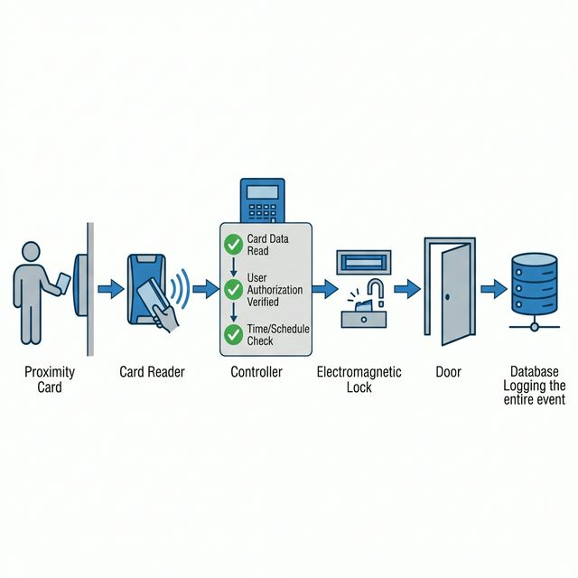
Software acts as the control panel for the entire security ecosystem.System Architecture & Signal Flow
The complete access control sequence happens in milliseconds (200-500ms), ensuring a smooth user experience:
- 1 Presentation: User presents credential (card, finger, face).
- 2 Data Extraction: Reader scans and extracts the unique ID or template.
- 3 Validation: Controller checks database permissions and time groups.
- 4 Action: If authorised, the controller signals the lock to release.
- 5 Audit: The event is logged (name, door, time) for tracking.
 Every door authentication happens in milliseconds across these five critical components.
Every door authentication happens in milliseconds across these five critical components.
Standalone vs Networked vs Cloud Systems
Access control systems are deployed in three main architectures, each suited for different scales.
Operates independently. Credentials programmed directly on the reader. Lowest cost, but no centralised management or comprehensive audit trail.
Controllers connected to a local server. Centralised management and detailed reporting. No internet required, but requires server maintenance.
Manage from anywhere via app or browser. No server needed, automatic updates. Highly scalable and ideal for multi-site businesses.
Access Modes & Authentication Methods
Choose the right security level for each area of your facility:
Single-Factor Auth
Card only or Biometric only. Fast and convenient. Suitable for general office areas and staff entrances.
Two-Factor Auth (2FA)
Card + PIN or Card + Biometric. Prevents unauthorised access if a card is stolen. Recommended for server rooms and finance areas.
Multi-Factor & Two-Person Rule
Maximum security vault areas may require Card + PIN + Biometric or the Two-Person Rule (requires two people to authenticate simultaneously).
3. Types of Access Control Systems
Access control systems are categorised by deployment scale, control architecture, and installation type.
By Deployment Scale

Self-contained reader-controller units. Best for shops, residential side gates, or individual room access. Cost: £600-£1,500.
Separate controllers for 2-8 doors each. Centralised management and real-time reporting. Best for professional office suites.
Manage hundreds of doors across multiple sites. Unified platform for access, CCTV, and lift control. Deep integrations.
By Control Architecture

| Architecture | Management | Audit Trail | Infrastructure |
|---|---|---|---|
| Standalone | Door-by-door | None/Limited | Reader only |
| Network (On-Prem) | Centralised | Comprehensive | Local Server |
| Cloud-Based | Anywhere (App/Web) | Comprehensive | Internet Connection |
By Installation Type

All readers and locks connected via permanent cabling. Maximum reliability, no batteries to maintain, and higher security. Preferred for new builds and permanent offices.
Battery-powered locks and readers communicating via WiFi or Bluetooth. Fast installation without drilling, but requires battery management every 6-12 months.
Hybrid Tip: Many modern systems use wired controllers for main entrances and wireless locks for internal office doors to balance reliability with installation speed.
4. Single Door Access Control
Single door access control systems are self-contained reader-controller units ideal for controlling one to three doors without centralised management requirements.
What Is a Single Door System?
Unlike multi-door systems that separate readers from central controllers, single-door systems integrate everything in one device. The unit contains the scanner, the "brain" (logic), the user database, and the lock relay. It is mounted directly next to the door, eliminating the need for extensive cabling back to a server room.
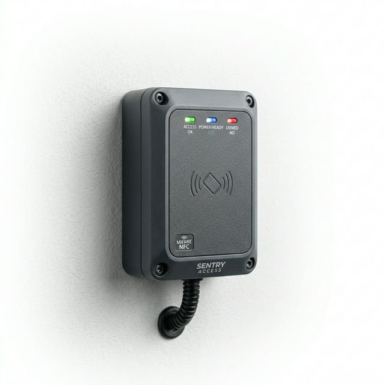
Standalone vs Network-Capable
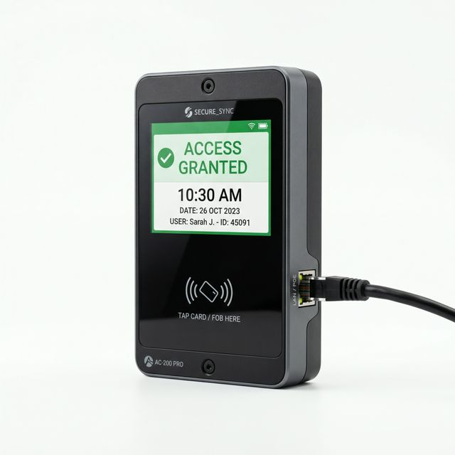
True Standalone Readers
Operate completely independently. Programmed via keypad or master card. No remote access or software. Best for side gates or very small offices with <10 users.
Network-Capable Units
Can operate standalone OR connect to WiFi/Cloud. Offers the flexibility to start small and add centralised management later as your organisation grows.
When Single Door Makes Sense
Single door systems are the right choice when:
- ✓ 1-3 Doors Total
- ✓ Fewer than 50 Users
- ✓ No complex audit trail required
- ✓ Budget-constrained projects
- ✓ Temporary site installations
Popular Models & Examples
1,000 user capacity. No network. Very reliable and low cost.
3,000 user capacity. TCP/IP or WiFi. Mobile app programming.
Fingerprint + Card. Network capable for centralized tracking.
Contactless. Large touchscreen. Cloud-ready for remote alerts.
5. Multi-Door Access Control
Multi-door access control systems use separate controllers and readers to manage 2-250+ doors with centralised management, comprehensive audit trails, and deep integration capabilities.
What Is a Multi-Door System?
Multi-door systems separate the "intelligence" (controllers) from the "interface" (readers). This enables centralized management of an entire building from a single software platform.
- Architecture: Readers are mounted outside doors as simple scanners, while controllers are installed in secure internal locations like electrical or IT rooms.
- Wiring: Readers connect to controllers via RS-485 or Wiegand data cables. Controllers then link to your network via Ethernet.
- Configurations: Controllers typically manage 2, 4, or 8 doors each. A system scales indefinitely by networking multiple controllers together.
 Professional controllers are installed inside the protected area for maximum security.
Professional controllers are installed inside the protected area for maximum security.
Why Multi-Door Is More Secure
Unlike standalone readers, multi-door controllers are hidden inside locked server rooms. Even if an external reader is tampered with, the door remains locked as the decision-making logic is inaccessible from the outside.
Modern controllers can detect when a reader is removed or cabling is cut. They can trigger immediate alarms or notification alerts to your security team before a breach occurs.
Advanced Features & Logic
Multi-door platforms enable sophisticated security rules that are impossible with standalone units:
Anti-Passback
Prevents credential sharing and tailgating. A user must exit a zone before they can enter again, ensuring one card cannot be used by multiple people to enter.
Door Interlock (Mantrap)
Used for high-security airlocks where only one door can be open at a time. Door B will not unlock until Door A is fully closed and locked.
Access Levels (User Permissions)
Assign permissions based on roles. A "Staff" level might access office floors, while "Management" level includes server rooms and executive suites.
Event-Triggered Actions
Automation based on events. Examples: activate CCTV recording on a forced entry, or unlock all doors automatically if a fire alarm is triggered.
Integration Capabilities
Multi-door systems act as the backbone for unified building security:
Link access events to video. Pop up camera feeds when sensitive doors are accessed.
Use door entry/exit to track clock-in times and generate automated HR reports.
Restrict elevator access by floor, ensuring users can only reach their authorised levels.
Management Software & Dashboard
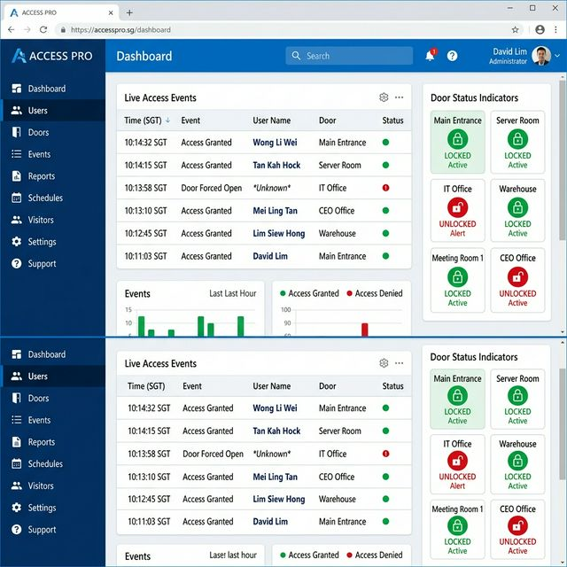
Scalable, deep biometric integration, and great value for medium deployments.
Leading cloud platform with built-in multi-site management and mobile app control.
High-security encrypted system supporting 250+ doors on a single platform.
Premium web-based platform with world-class biometric matching speed.
When to Choose Multi-Door?
We recommend multi-door systems for any organisation with more than **4 doors** or **30 users**. The centralised management saves hours of administrative time when adding or removing staff credentials.
6. Upgrading from Mechanical Locks to Access Control
Most businesses already have doors secured with traditional mechanical locks and keys. Upgrading to electronic access control doesn't always require replacing doors or frames—in many cases, you can retrofit access control onto existing infrastructure.
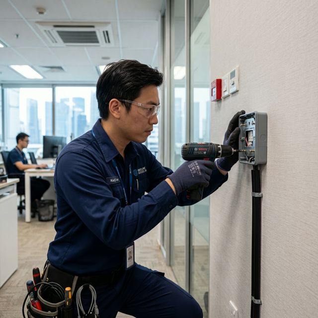
Assessing Your Current Setup
Before upgrading, evaluate whether your existing doors are suitable for an access control retrofit. Most doors can accommodate electronic security, but material and frame condition affect the complexity.
- Wood/Metal: Easiest to retrofit. Accepts most locks.
- Aluminium: Common in commercial buildings. May require reinforcement for heavy EM locks.
- Glass: Requires special U-brackets or patch fittings. Drilling is not possible.
- UPVC/Composite: Requires careful drilling to avoid damaging the internal core.
Frames must be solid to support the weight and force of electronic locks. Hollow frames may need internal reinforcement for high-holding-force EM locks (600kg+).
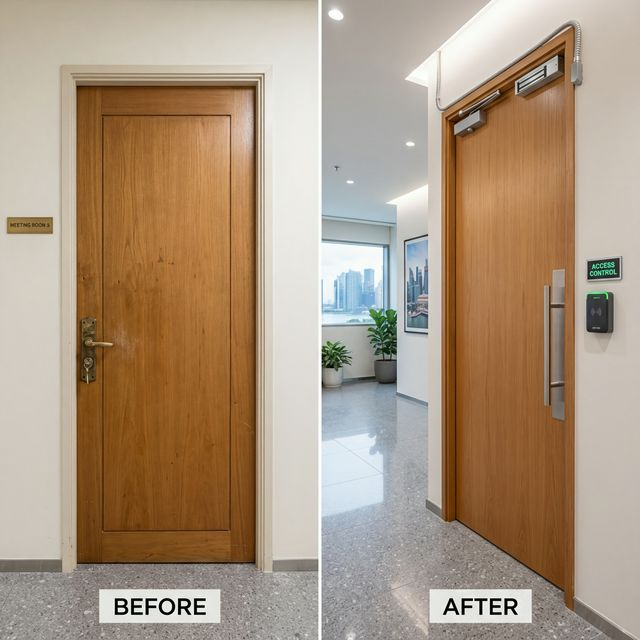
Retrofit vs New Installation
| Option | Advantages | Best For |
|---|---|---|
| Retrofit | Lower cost (30-40% savings), faster installation, minimal disruption. | Doors in good condition, standard commercial frames. |
| New Installation | Cleanest appearance, guaranteed alignment, upgrade to fire-rated doors. | Damaged/warped doors, high-security vault or core upgrades. |
Phased Implementation Approach
Phased upgrades help spread costs while providing immediate security benefits at your most vulnerable points.
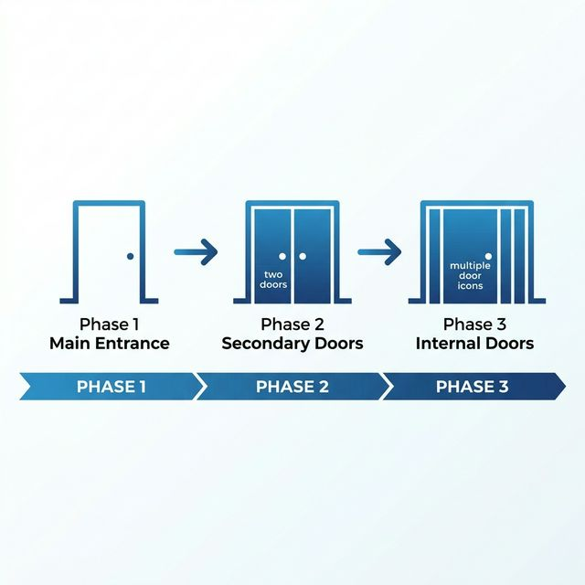
Main Entrances
Immediately control who enters the building. Revoke ex-staff access instantly and track all visitors.
Secondary Access
Secure side doors, loading bays, and parking gates to prevent common tailgating or unauthorised entry points.
Restricted Internal Zones
Control internal movement for server rooms, finance departments, and executive suites where security is paramount.
Common Retrofit Challenges
No Power Near the Door?
Solution: We use Power over Ethernet (PoE) which delivers data and power over a single cable, or wireless battery-powered locks for low-traffic internal doors.
Glass Door Constraints?
Solution: U-bracket EM locks clamp onto the top of the glass, providing a powerful holding force without requiring any drilling in the tempered glass.

7. Credential Security & Management Lifecycle
Effective credential management is critical to access control security. Understanding how credentials are issued, stored, and deactivated ensures your system remains secure throughout its lifecycle.
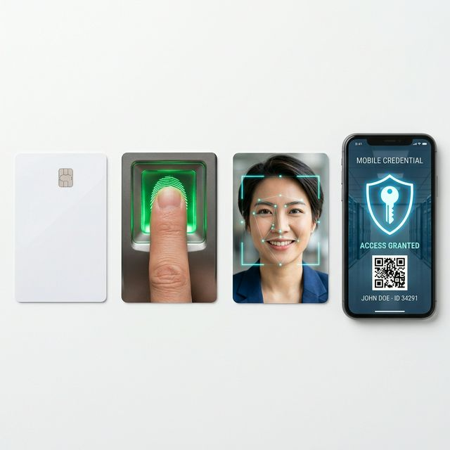
The Enrolment Process
Modern systems make user on-boarding fast and professional, typically taking only 2-5 minutes per user.
Associate a unique ID with an employee name in the software. Bulk imports from CSV are available for large organisations.
Fingerprint or facial scans create mathematical "templates"—one-way hashes that cannot be reversed into photos for privacy security.
Virtual credentials are sent via app or email. Employees self-enrol on their smartphones, reducing administrative overhead.
Storage & Encryption Security
Security in Transit
Communication between readers and controllers should be encrypted via OSDP (Open Supervised Device Protocol) to prevent credential interception or "sniffing".
Encryption at Rest
Credential databases on servers and in the cloud are encrypted using AES-256 standards, ensuring your user data is protected even in the event of hardware theft.
Instant Revocation: The Absolute Benefit
The primary advantage over mechanical keys is the ability to instantly revoke access. When an employee leaves, their credential is deactivated in the software in seconds, reflecting across all networked doors immediately.
Best Practice: Deactivate credentials during the exit interview process. Never wait until the end of the day or the following morning to secure your premises.
Card Security Levels
Not all access cards are equal. Choosing the right technology determines how vulnerable your site is to cloning.
| Technology | Security Level | Cloning Difficulty | Best For |
|---|---|---|---|
| 125kHz EM Cards | Low | Very Easy (Plain text ID) | Gyms, Parking, Residential Gates |
| MIFARE Classic | Medium | Moderate (Encrypted memory) | General Office Suites |
| MIFARE DESFire EV2/3 | High | Extreme (AES-128 Encryption) | Finance, Server Rooms, Government |
Credential Lifecycle Diagram
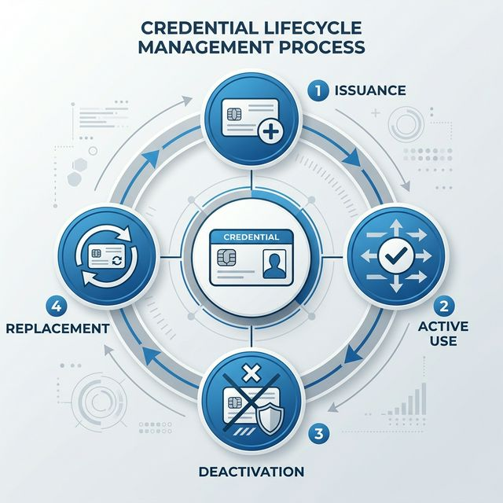
8. Credential Types & Technologies
Access control supports multiple credential technologies, each with different security levels, costs, and user experience. Understanding your options helps you choose the right balance for your application.
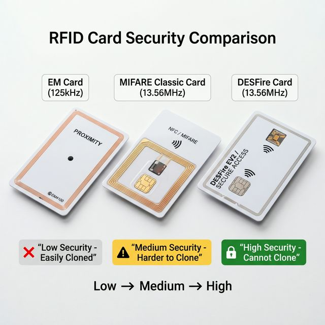
Biometric Credentials
Biometrics provide the highest assurance of user identity—they cannot be shared, lost, or forgotten.
Most common and cost-effective biometric. Ideal for time attendance and standard high-security internal rooms.
Completely touchless and incredibly fast (<1s). Hygiene-first choice for modern premium office lobbies.
Highest security biometric. Scans internal vein patterns which cannot be forged. Used for bank vaults and data centres.
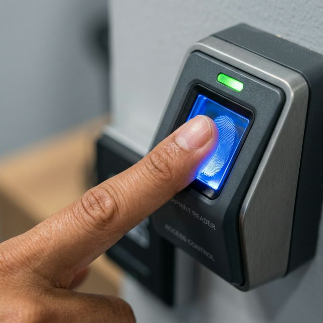
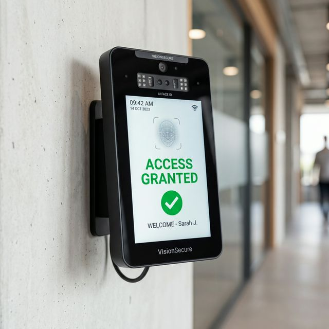
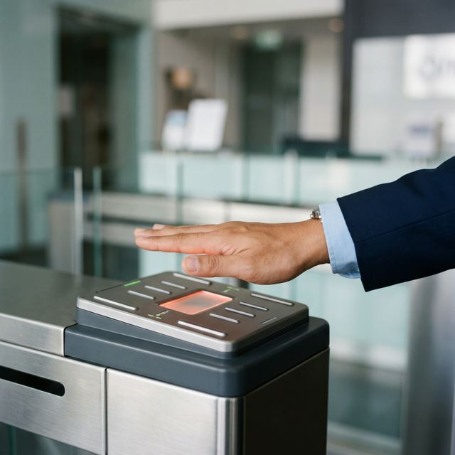
Mobile & Smartphone Access
The future of access control is the device your employees always carry: their smartphone.
Total hands-free convenience. The door unlocks via proximity while the phone is still in your pocket or bag.
"Tap to Enter" experience similar to contactless payments. Works reliably even if the phone screen is off.
Perfect for one-time visitors. Send a time-limited QR code via email that guests can scan at the entrance terminal.
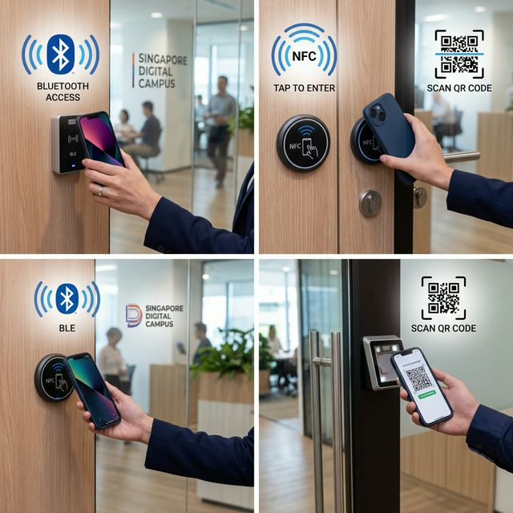
Traditional PIN Code Access
Numeric PINs remain a vital secondary factor. While easy to share, they are highly effective when used in a **Two-Factor (2FA)** configuration (e.g., Card + PIN) for high-security areas like cash rooms or pharmacies.
Security Comparison by Method
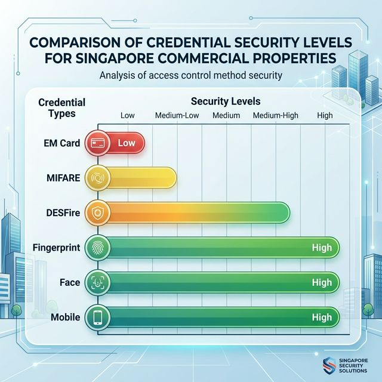
9. Reader Types Explained
Readers are the physical interface between users and the access control system. Choosing the right reader type depends on your chosen credential technology, security requirements, and environmental conditions.
RFID Card Readers
Card readers are the industry standard for commercial access. They scan cards or fobs and transmit the encrypted ID to the door controller. We typically categorise these by frequency:
- EM Readers (125kHz): Basic, reliable, and low cost. Ideal for residential gates or internal office doors.
- MIFARE/Smart Readers (13.56MHz): Support encrypted communication. Highly recommended for commercial suites to prevent card cloning.
- Multi-Technology: Support both old EM and new MIFARE cards—perfect for phased facility upgrades.
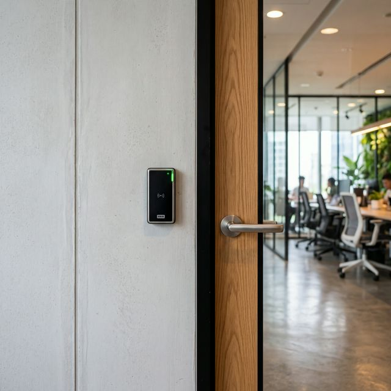
Biometric & Facial Terminals
Biometric readers eliminate the risk of shared cards and "buddy punching" in time attendance systems.
Available as optical or capacitive sensors. Modern units store up to 5,000 templates locally and perform matching in under 1 second.

3D terminals use dual cameras for depth sensing, preventing spoofing via photos. Completely touchless and hygienic.
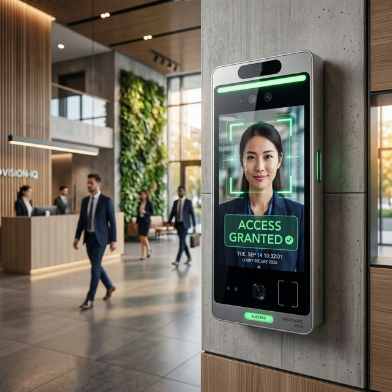
Environmental & Placement Considerations
IP66 Weatherproofing
Outdoor readers must be rated for Singapore's humidity and heavy rain. We use UV-resistant housings to prevent fading in direct sunlight.
Optimal Mounting Height
Standard readers are mounted 1.2m to 1.4m from the floor. Facial terminals are mounted slightly higher (1.4m to 1.6m) to align with adult face height.
Vandal Resistance
For public-facing gates, we recommend IK10 impact-rated readers with built-in tamper switches that alert security if the unit is pried off the wall.
10. Lock Types & Selection
The electric lock is the physical strength of your system. Choosing the right lock depends on the door material, swing direction, and fire safety requirements of your specific location.
Electromagnetic (EM) Locks
EM locks use powerful magnetic force to hold a door closed. They consist of an electromagnet on the frame and an armature plate on the door. They are inherently Fail-Safe (unlock when power is cut), making them the gold standard for fire exit routes.
- 300kg/600lbs: Best for internal office doors.
- 600kg/1200lbs: Industry standard for commercial entrances.
- U-Brackets: Mandatory for frameless glass doors (no drilling required).
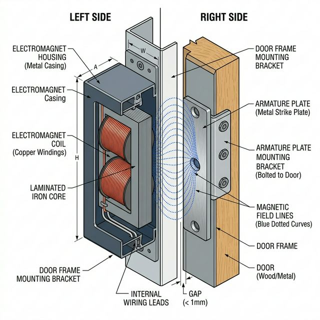
Alternative Lock Mechanisms
Replaces the standard strike plate in the frame. Allows the door to stay locked mechanically but release electronically. Best for wooden doors.
A heavy-duty metal bolt that drops into a floor strike. Provides double-swing door compatibility and very high holding force.
Integrated into the door itself. Provides the cleanest appearance (hidden) and includes a mechanical key override for emergencies.
Lock Selection Matrix
| Door Type | Primary Choice | Holding Force | Safety Mode |
|---|---|---|---|
| Frameless Glass | EM Lock + U-Bracket | 600kg | Fail-Safe |
| Main Entrance (Metal) | Heavy Duty EM Lock | 600kg - 1200kg | Fail-Safe (with UPS) |
| Internal Suite (Wood) | Electric Strike | ~800kg | Fail-Secure Op. |
| Fire Exit Door | EM Lock | 600kg | Mandatory Fail-Safe |
11. Planning Your Access Control System
Effective access control planning considers property type, user count, security requirements, and integration needs. This section provides detailed planning guidance for Singapore property managers across different industries.
1. Residential (Condo & Landed)
Typical requirements: 1-10 users, basic security, high ease of use.
Digital locks are the gold standard for residential doors, offering card, PIN, and fingerprint entry without complex wiring.
We recommend card readers with EM locks for side gates. Domestic helpers can be given time-restricted access cards for specific working hours.
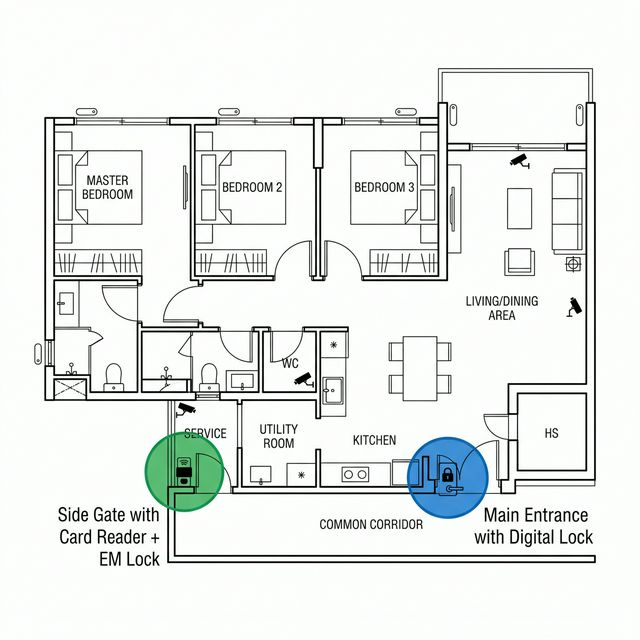
Layered residential security strategy: Digital lock for main entrance + RFID for side gates.2. Professional Offices (SME to Enterprise)
Reception and lobbies benefit from high-throughput facial recognition to reduce bottlenecks during morning check-ins.
Standard card readers for department-specific areas ensure HR and Finance remain secure from general staff access.
Server and cash rooms require two-factor authentication (Card + Fingerprint) and full audit trails.
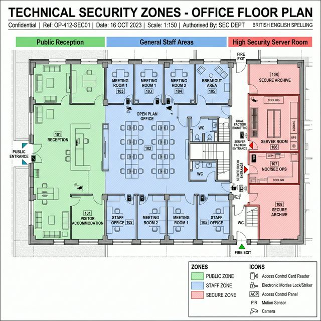
Office zoning: Segmenting movement between general work areas and high-security server rooms.3. Industrial, Warehouse & Dormitories
Focus on shift management, safety compliance, and ruggedized hardware.
Shift-Based Access
Automate door permissions to match shift schedules. Day shift cards auto-expire at 6 PM, ensuring no unauthorised after-hours entry.
Two-Person Rule
For hazardous material or high-value chemical storage, the system can require two independent employee credentials within 30 seconds to grant entry.
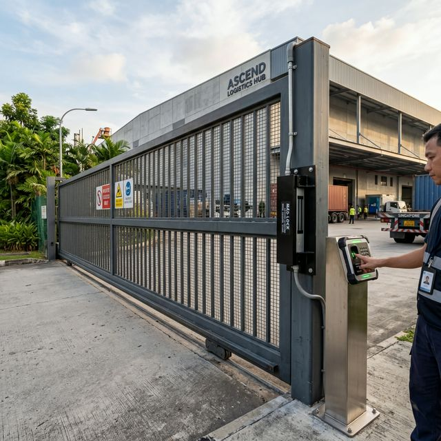
Ruggedised industrial access: Combining biometric precision with high-holding-force magnetic locks.4. Hospitality & Specialised Care
Integration with Property Management Systems (PMS) allows for mobile keys and automatic checkout deactivation.
Delayed-egress locks and wristband detection prevent confused residents from wandering out into traffic while remaining fire-code compliant.
12. Cloud-Based Access Control - No Server Required
Cloud-based access control eliminates the need for on-site servers, offering remote management, automatic updates, and multi-site capabilities through internet-connected readers and secure cloud platforms.
How Cloud Access Works
Traditional systems rely on local servers. Cloud systems connect readers directly to platforms like AWS or Azure. Intelligence is moved from your server room to the cloud, allowing for true "anywhere" management.
This decentralized architecture eliminates the single point of failure and allows for real-time synchronization across global locations.
 Cloud Architecture: Decentralised intelligence powered by global cloud infrastructure.
Cloud Architecture: Decentralised intelligence powered by global cloud infrastructure.
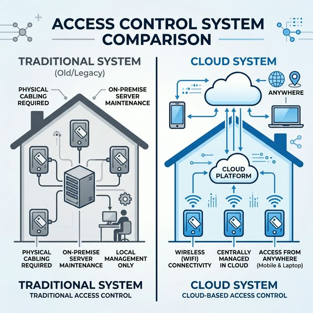
Infrastructure Comparison: Moving from hardware-heavy local servers to agile cloud platforms.Traditional vs. Cloud Comparison
- Instant Provisioning: Add or revoke users via a mobile app. Credentials sync across all sites in under 30 seconds.
- Remote Unlock: Grant access to delivery drivers or visitors from your smartphone, even if you are out of the office.
Core Cloud Features
Use your smartphone as the key via Bluetooth or NFC. Replaces expensive physical cards.
Pre-register guests and email them a time-limited QR code that expires automatically after their visit.
Get instant push notifications for "Door Forced Open" or "Unauthorised Access Attempt" events.
Schedule weekly audit trails to your email, tracking exactly who accessed sensitive areas.
Mobile-First Management
Control your entire security perimeter from your pocket. The mobile app allows for instant biometric enrollment, remote door unlocking, and real-time push notifications for critical security events.
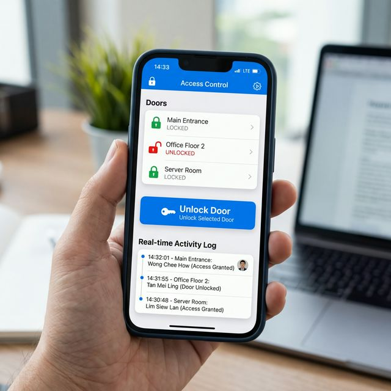
Modern Control: Managing security with the same ease as a banking or smart-home app.Security, Privacy & PDPA
Data Residency (Singapore)
We prioritise platforms that store data in **AWS Singapore** or **Azure Southeast Asia** regions, ensuring full compliance with the Personal Data Protection Act (PDPA).
End-to-End Encryption
All communication between readers and the cloud uses TLS 1.2+ (military-grade) tunnels. Credentials are stored as encrypted hashes, useless to intruders.
Omnichannel Multi-Site Governance
Manage ten different branches from a single unified dashboard with one login. Centralised visibility allows for global policy enforcement and standardized reporting across all your locations.
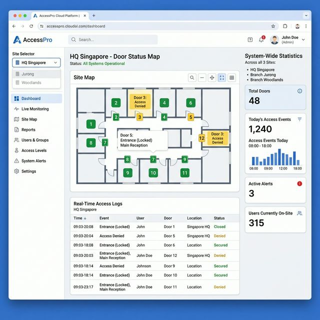
Enterprise Governance: Unified monitoring of global sites from a single browser-based command centre.Offline Intelligence: What if Internet Fails?
A common concern is internet reliability. Modern cloud readers are "edge-intelligent":
Local Caching
Readers store up to 10,000 recently used credentials in local memory. If the internet goes down, existing employees can still enter normally. Access decisions are made at the door.
Auto-Sync
Once the connection is restored, the reader automatically uploads all offline logs and downloads any new user changes made during the outage.
Enterprise Tip: For high-uptime requirements, we deploy readers with 4G/LTE failover SIM slots to ensure the system is manageable 24/7.
Cloud Brand Spotlight: Akuvox & ZKTeco
Native cloud platform without separate controllers. Ideal for 1-10 doors and SMEs. Beautiful hardware design with built-in 4G support.
Standard for time attendance integration. Allows you to start with cloud and scale to on-premise as your organisation evolves.
Premium biometric accuracy with cloud-hosted management. Best for high-security sites requiring remote oversight.
 The Akuvox ecosystem: From compact mullion readers to premium facial recognition terminals.
The Akuvox ecosystem: From compact mullion readers to premium facial recognition terminals.
TCO Analysis: Is Cloud More Expensive?
While cloud systems involve a monthly subscription, they eliminate the "Hidden Costs" of traditional server hardware, OS licensing, and IT maintenance.
| Deployment Scale | Traditional (5-Year Cost) | Cloud (5-Year Cost) | Winner |
|---|---|---|---|
| 10 Doors (Single Site) | ~$20,000 | ~$21,000 | Cloud (for Convenience) |
| 30 Doors (Single Site) | ~$45,000 | ~$58,000 | Traditional (Better ROI) |
| 15 Doors (3 Branches) | ~$60,000 (3 Servers) | ~$32,000 (One Cloud) | Cloud (Strong Winner) |
13. Management Software & Features
Access control management software is the command centre for your security ecosystem. Modern platforms go far beyond simple door unlocking, offering predictive analytics, unified monitoring, and deep business integrations.
Core Platform Capabilities
Manage the entire employee journey from enrolment to offboarding. Deactivate credentials instantly for departing staff while retaining their audit trails for compliance.
A live dashboard provides a visual status of every door. Get instant colour-coded alerts for "Door Forced Open" or "Invalid Authentication Attempts."
Generate automated reports in PDF or Excel. Track exactly who accessed high-security zones like server rooms or cash offices over specific intervals.
High-Security Software Logic
Anti-Passback Rule
Prevents credential sharing by requiring a valid EXIT log before the same card can be used to ENTER again. Essential for strict occupancy tracking and parking management.
Door Interlock (Mantrap)
Configures a pair of doors so only one can be open at a time. Ideal for clean rooms or high-security vaults to prevent "piggybacking" or contamination.
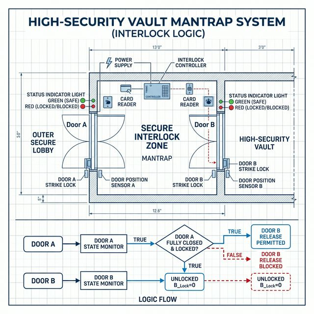
Airlock / Mantrap logic: Ensures physical isolation between public and secure zones.Integration Ecosystem
Leverage your access control data across other business systems:
Trigger a camera popup on the security desk whenever an unauthorised access attempt occurs. Matches door logs with visual proof.
Automatically adjust lighting and temperature settings based on room occupancy. Significant energy savings for commercial towers.
14. Access Levels, Time Groups & Permissions Architecture
Permissions are built on a layered architecture of Access Levels and Time Groups. This structure enables sophisticated security policies that scale effortlessly without manual per-user configuration.
Hierarchy of Permission
Instead of managing users individually, we use logical templates to automate security:
- Access Levels: Templates that define WHERE a user can go (e.g., "Staff" = Main + Pantry + Meeting Rooms).
- Time Groups: Schedules that define WHEN access is allowed (e.g., "Office Hours" = Mon-Fri, 08:00 - 18:00).
- Door Groups: Logical zones that combine multiple doors (e.g., "Public Areas" = 5 separate lobby doors) for easier batch assignment.
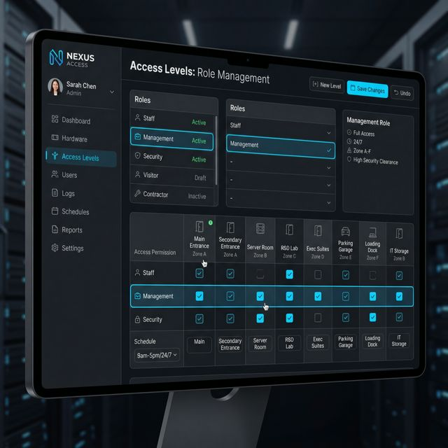
Permissions architecture: Grouping readers into logical 'Access Levels' for rapid user on-boarding.Industry Case Studies
Segmenting one building for 20 companies. Each tenant manages their own floor permissions while sharing common gym/rooftop lobby access.
Clinical Role-Based Access: Nurses have Ward access; Doctors have Surgical zone access; Admin restricted to Offices.
Safety-Interlocked zones: Only employees with "Forklift Certified" flag in their profile can unlock warehouse charging bays.
Best Practice: The Principle of Least Privilege
Always start by granting the minimum access required for an employee's job function. It is much easier to add permissions later than to identify and revoke excessive access after a security breach.
15. Time & Attendance Integration
Access control systems can double as high-precision time and attendance platforms, automatically tracking work hours as employees enter and exit. This eliminates manual timesheets, prevents time theft, and ensures payroll accuracy while remaining MOM compliant.
How It Works: Every Tap is a Punch
Instead of dedicated time-clocks, we configure exit and entry readers to function as attendance terminals. The "First entry of the day" is logged as the clock-in, and the "Last exit of the day" is the clock-out. The system automatically calculates total hours, excluding lunch breaks where required.
Sample Daily Timesheet
| Clock-In | 09:05 AM |
| Clock-Out | 06:12 PM |
| Total Hours | 9h 07m |
| Overtime (OT) | 0h 07m |
Solving "Buddy Punching"
Time theft through "buddy punching" (clocking in for a friend) can cost a 100-staff factory upwards of $18,000 per year. We recommend Biometric Verification (Fingerprint or Facial Recognition) for shift workers to ensure that every "time punch" corresponds to the actual physical presence of the employee.
16. Digital Door Locks
Digital door locks are standalone, battery-powered electronic locksets that replace traditional mechanical locks. They provide keyless entry without the need for complex cabling infrastructure.
The 4 Core Authentication Types
Fast "Tap-and-Go" using standard 13.56MHz cards or keyfobs.
Backlit touch-keypads for access without any physical token.
The most popular residential choice. Secure and impossible to lose.
Unlock via Bluetooth or generate temporary Guest PINs remotely.
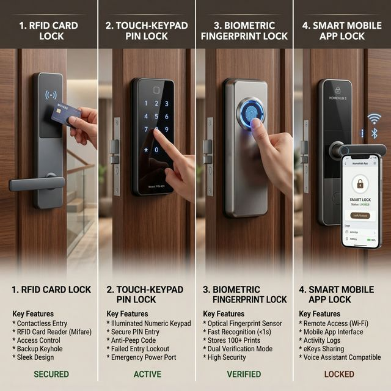
Digital door lock authentication: Multiple keyless entry options tailored for residential and boutique office environments.When to Choose Digital Locks over Full Access Control
| Scenario | Digital Door Lock | Wired Access Control |
|---|---|---|
| Ideal Location | Residential / Hotel Rooms | Offices / Factory Perimeters |
| Cabling | None (Wireless/Battery) | Requires LAN & Power |
| Traffic Volume | Low to Moderate | Heavy Duty (High Traffic) |
| Management | Local (Per-lock) | Centralised (Server/Cloud) |
17. Advanced Integrations
Modern access control systems act as the bridge between security, facility management, and life safety systems, creating a unified, responsive building environment.
CCTV & Video Verification
Link every "Door Scan" to a camera view. In high-security environments, a video popup on the security desk allows for instant visual verification of the entrant, preventing card sharing and tailgating.
Visitor Management (VMS)
Hosts email a time-limited QR code to guests. Visitors scan the code at the entrance for seamless self-entry.
Automated sign-in kiosks capture visitor photos and automatically notify the host via SMS upon arrival.
Guest credentials automatically deactivate at a set time (e.g., 6:00 PM), ensuring no legacy access lingers.
Elevator & Lift Access Control
Restricts floor buttons within the elevator cabin based on the user's credential. Essential for high-rise residential privacy and multi-tenant commercial buildings to ensure staff only access their authorised floors.
Car Park Barriers & ANPR
Automatic Number Plate Recognition (ANPR) cameras read vehicle licence plates in milliseconds, lifting boom barriers for season parkers without requiring a card tap. This provides a completely hands-free entry experience for residents and staff.
Fire Alarm & Emergency Override
Integration with your building's Fire Alarm Panel is **mandatory**. Upon alarm activation, the access control system must instantly release all magnetic locks in the means of escape, allowing for safe, unimpeded evacuation in compliance with SCDF fire safety codes.
18. Turnstiles, Barriers & Physical Access Control
Physical barriers enforce strict one-person-per-credential authentication, effectively preventing "tailgating" and ensuring 100% accurate occupancy tracking in high-traffic environments.
Lobby Access Solutions
Economical waist-height barriers with rotating arms. Ideal for gyms, factories, and budget-conscious office perimeters. Throughput: ~25 people/minute.
Premium glass or acrylic panels that swing open. Sleek, stylish, and perfect for modern corporate lobbies. Throughput: ~35 people/minute.
High-speed optical barriers where panels retract into the cabinet floor. Fast, silent, and prestige-focused. Throughput: ~40 people/minute.
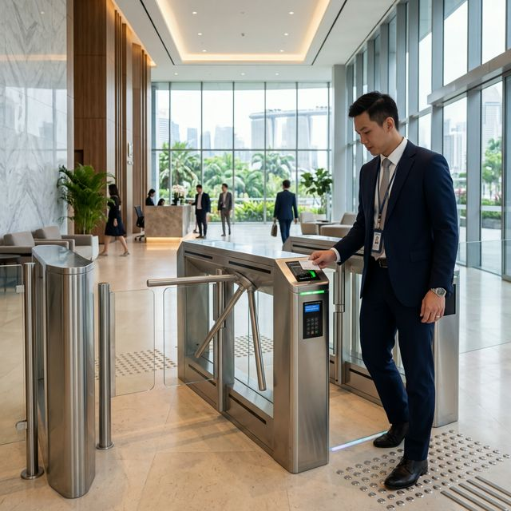
Tripod Turnstiles: Effective, low-cost pedestrian control for high-traffic industrial and commercial zones. Flap Barriers: High-speed, prestige-tier entrance control for modern corporate headquarters.
Flap Barriers: High-speed, prestige-tier entrance control for modern corporate headquarters.
Specialised High-Security Barriers
Floor-to-ceiling rotating cages for maximum security. Impossible to jump or crawl under. Essential for military bases, prisons, and unmanned industrial perimeters.
Wider gates next to standard turnstiles for wheelchairs, strollers, and delivery trollies. Fully ADA-compliant for inclusive building access.
Vehicle Access Control
Car Park Boom Barriers: Automate your car park with ANPR (Automatic Number Plate Recognition). Our cameras read licence plates in milliseconds, lifting barriers for season parkers without the need to wind down windows or tap cards.
Automatic Rising Bollards: High-security vehicle blockage for embassies or pedestrian plazas. These heavy-duty steel posts rise from the ground to prevent vehicle-ramming attacks.
 Vehicle access automation: ANPR cameras identify vehicles and command barriers to lift without driver intervention.
Vehicle access automation: ANPR cameras identify vehicles and command barriers to lift without driver intervention.
19. What Does It Cost?
System costs vary based on door count, technology choice, and integration depth. Use these budgetary guides for initial project planning in Singapore.
Budgetary Estimates by Property Type
| Segment | Typical Scope | Budgetary Cost (SGD) |
|---|---|---|
| Small Office | 1-3 Doors (Card Readers) | $2,000 – $4,500 |
| Enterprise Space | 10 Doors + Biometrics + T&A integration | $18,000 – $35,000 |
| Commercial Building | 40 Doors + Lift Access + Fire Link | $80,000 – $150,000+ |
| Residential Side-Gate | 1 Door (Outdoor Ruggedised Reader) | $1,200 – $2,500 |
ROI & Savings Analysis
Operational Payback
- Eliminate Security Guards: A single turnstile lane can automate lobby enforcement for an 11-month payback vs security guard labour.
- Prevent Time Theft: Biometric T&A integration typically saves 3-5% on monthly payroll by eliminating "buddy punching."
- No More Re-Keying: When keys are lost or staff leave, deactivating a card costs $0, compared to $300+ for mechanical lock changes.
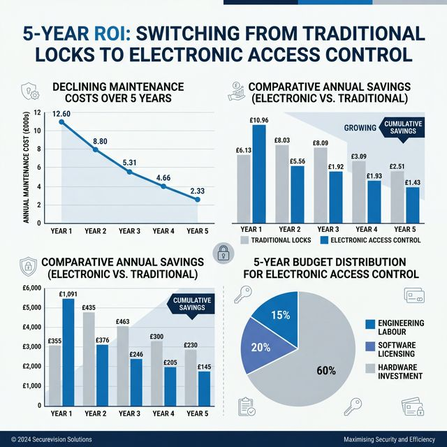
ROI Analysis: Long-term savings from eliminated re-keying costs and improved payroll accuracy.20. Real Installation Examples
Learn from actual access control deployments across different property types in Singapore. These case studies highlight the balance between security requirements, physical constraints, and ROI.
Case Study 1: Boutique Law Firm (15 Staff)
Protecting sensitive client files in a 3-floor commercial office. Needed to restrict junior staff from partner levels and ensure a two-person rule for document vaults.
8-door Akuvox Cloud system using Card+PIN readers. Integrated a 'two-person rule' logic for vault access and visitor QR codes for clients.
Zero unauthorised access incidents in 6 months. Receptionist saved 3 hours/week on visitor management. Full compliance with legal audit requirements.
Case Study 2: Logistics Warehouse (80 Staff)
Preventing "buddy punching" (payroll fraud) and ensuring only forklift-certified staff could access dangerous production zones.
Facial recognition at the main gate for T&A. Interlocked door zones that check the employee's certification status in real-time before unlocking.
Payroll costs reduced by 4.8% ($35k/year savings) due to accurate time tracking. Passed MOM audit with zero discrepancies.
 Case Study 2: High-throughput facial recognition integrated with safety-interlocked warehouse zones.
Case Study 2: High-throughput facial recognition integrated with safety-interlocked warehouse zones.
21. Maintenance & Best Practices
Preventive maintenance ensures your access control system remains reliable and secure. Intermittent faults are often the result of neglected door alignment or outdated firmware.
Maintenance Checklist
Test all readers with a known card. Verify door re-locking speed and check for "Door Held Open" alarms.
Review active user lists. Deactivate ex-employees and audit any temporary "Manager Override" permissions.
Inspect EM lock contact plates for rust/alignment. Replace UPS batteries every 3 years to ensure power failure resilience.
22. Fire Safety & Compliance
Access control systems must never impede emergency evacuation. In Singapore, SCDF fire codes mandate strict integration between security hardware and life safety systems.
SCDF Mandatory Compliance: Fail-Safe Requirement
All doors located in a "Means of Escape" (exit routes) MUST use Fail-Safe locks. This ensures that upon fire alarm activation or power failure, all magnetic locks release immediately to allow unimpeded evacuation. Fail-Secure locks are strictly prohibited on fire exit doors unless a mechanical manual override is provided.
Fire Alarm Integration
Our controllers are wired directly to the building's Fire Alarm Panel (FAP) via a dry-contact relay. When the alarm triggers, the 12/24V power to all door locks is cut at the source—guaranteeing that occupants can exit without fumbling for cards or fingerprints during an emergency.
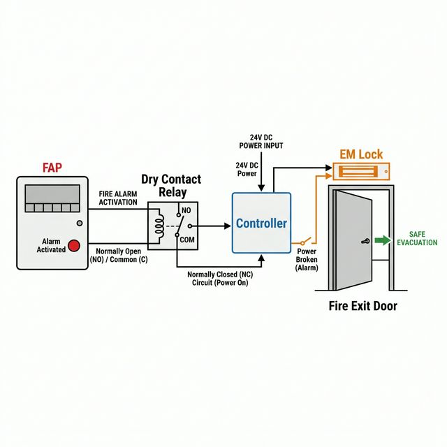
Fire Safety Integration: Life-safety signals from the FAP always take priority over the security system.23. PDPA, Privacy & Cybersecurity
As access control systems collect personal data (names, movements, and biometric templates), compliance with Singapore's Personal Data Protection Act (PDPA) is essential.
PDPA Obligations
You must obtain explicit Consent before enrolling staff biometrics. Use Purpose Limitation notices to explain that data is for security and attendance only. Always implement a Retention Policy to auto-purge logs after 90–365 days.
Cyber Resilience
Access control management software should be on a separate VLAN, isolated from the corporate network. Always enforce MFA (Multi-Factor Authentication) for system administrators to prevent unauthorised user additions.
24. Common Mistakes to Avoid
Buying a 2nd-floor controller with no spare capacity often results in expensive hardware replacement when the company grows by just one door. Always plan for 20% future expansion.
Installing a standard strike on an outswing door is a common site-survey error. Always verify the door swing before ordering hardware to avoid rework costs.
For side-gate readers, rain can travel along the cable directly into the electronics. Always ensure a "drip loop" is made during installation to prevent water damage.
Using default "admin/1234" login for the door controller is an open invitation for hackers. Change passwords immediately upon commissioning.
25. Brands & Systems We Carry


26. Frequently Asked Questions
What happens to my doors during a power failure?
This depends on your lock type. **Fail-Safe** doors (like EM locks) will unlock immediately for safety. **Fail-Secure** doors (like some electric strikes) will stay locked. We recommend installing a UPS (Battery Backup) to keep systems powered for 2–4 hours during an outage.
Can I use my existing door or must I replace the whole frame?
Most wood and metal doors can be retrofitted. We can install electric strikes into existing frames or mount EM locks to the top header without replacing the entire door structure.
Is cloud access control more expensive than on-premise?
Cloud systems have lower upfront costs (no server needed) but require a small monthly subscription. On-premise systems have a higher initial "CapEx" but minimal ongoing software costs. Cloud is usually 30% more cost-effective for 1-5 door setups.
How often should I audit my user database?
We recommend a full audit every quarter. This ensures that any temporary contractors or ex-employees are permanently purged from the system, maintaining your security integrity.